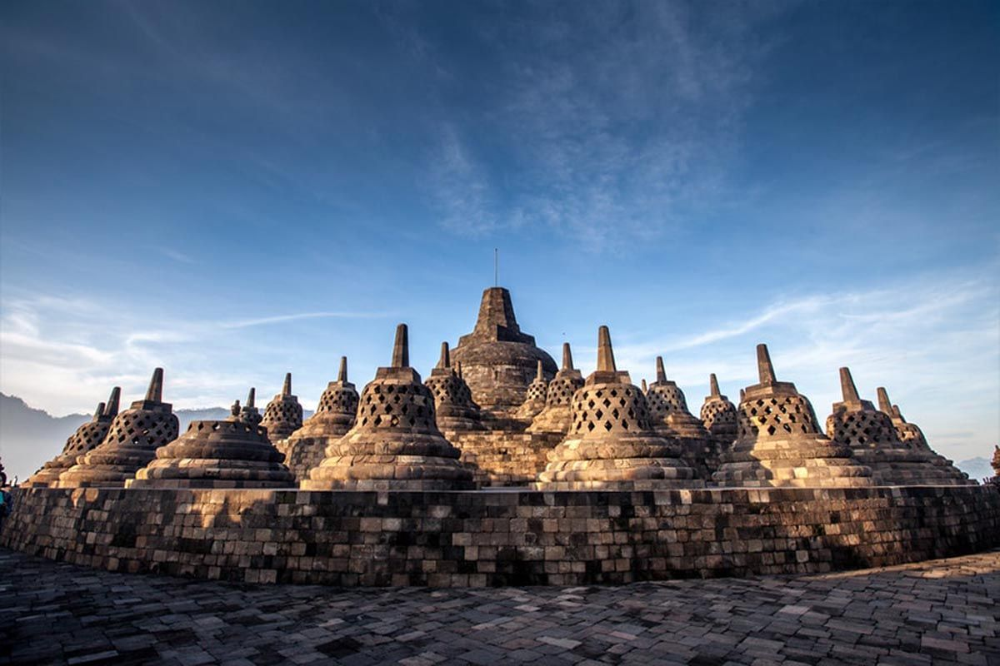
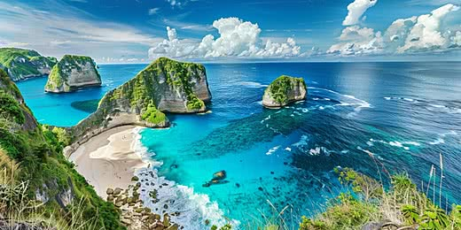
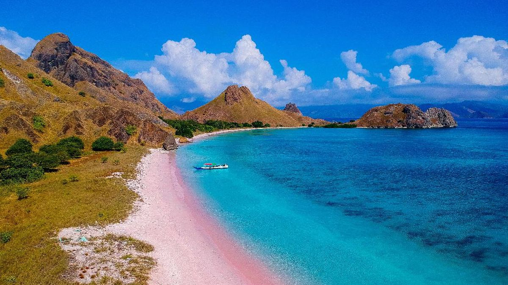
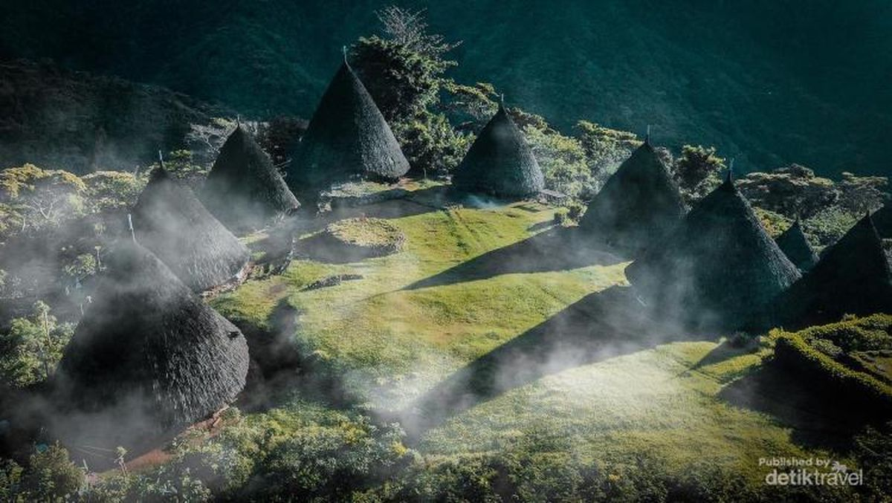
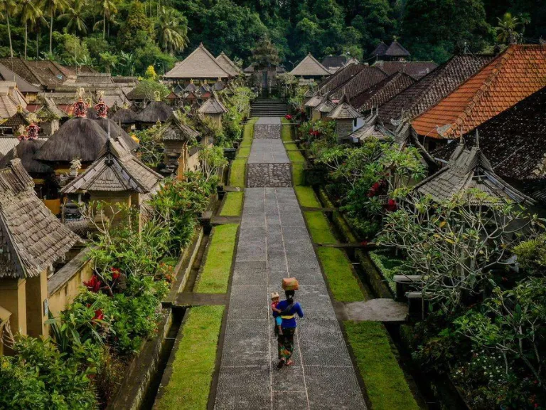
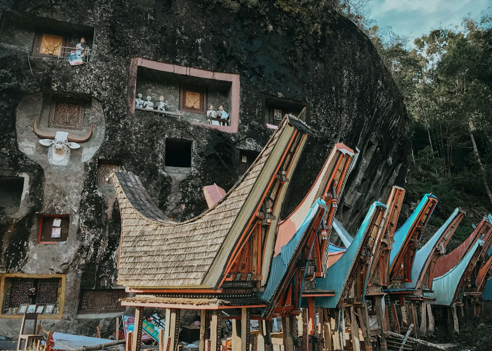
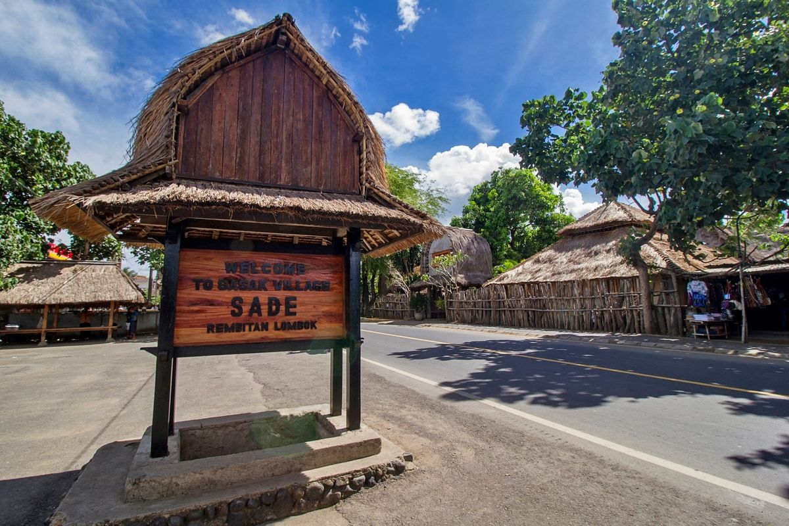

Daftar Destinasi Wisata
Jelajahi berbagai pilihan destinasi wisata alam, budaya, dan desa adat Nusantara yang menakjubkan.

BudayaCandi Borobudur
Candi Borobudur adalah candi Buddha terbesar di dunia yang dibangun pada abad ke-8. Sebagai salah satu warisan budaya dunia...
 Alam
Alam
Gunung Bromo
Gunung Bromo terkenal dengan keindahan kawah aktif, hamparan lautan pasir luas, serta pemandangan matahari terbit...

AlamNusa Penida
Nusa Penida menyajikan pesona tebing laut yang megah and pantai berpasir putih bersih seperti Pantai Kelingking...

AlamPink Beach
Pink Beach merupakan pantai unik dengan pasir berwarna merah muda lembut yang berasal dari serpihan karang merah...
Candi Prambanan
Candi Prambanan adalah kompleks candi Hindu terbesar di Indonesia yang memiliki arsitektur ramping dan tinggi...
 Alam
Alam
Pulau Komodo
Pulau Komodo adalah habitat alami dari kadal raksasa purba Komodo yang dilindungi dunia. Pihak pengelola...
Raja Ampat
Raja Ampat adalah surga penyelaman dunia yang memiliki keanekaragaman terumbu karang tertinggi. Wilayah kepulauan...
 Budaya
Budaya
Pura Luhur Uluwatu
Pura Luhur Uluwatu berdiri di ujung tebing tinggi yang menjorok ke samudra luas. Di sekeliling pura terdapat...

Desa AdatKampung Adat Wae Rebo
Wae Rebo adalah desa adat tradisional di pegunungan terpencil Flores yang memiliki 7 rumah adat kerucut Mbaru...

Desa AdatDesa Adat Penglipuran
Penglipuran adalah salah satu desa adat terbersih di dunia yang mempertahankan tata ruang tradisional Tri Hita Karana dan arsitektur bambu khas Bali...

BudayaTana Toraja
Tana Toraja terkenal dengan ritual pemakaman Rambu Solo, kuburan tebing Londa, serta deretan rumah adat Tongkonan beratap megah...

Desa AdatDesa Sade
Desa Sade adalah salah satu desa adat suku Sasak di Lombok yang masih mempertahankan tradisi, arsitektur rumah tradisional, serta nilai-nilai budaya...